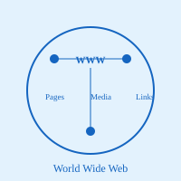

World Wide Web (WWW)

The World Wide Web (WWW) is a hypermedia information retrieval initiative that operates on top of the Internet. It is a system of interconnected documents and resources, linked by hyperlinks and accessed through the Internet. The World Wide Web was invented by Tim Berners-Lee in 1989 while working at CERN (European Organization for Nuclear Research) in Switzerland. He created it as a solution to facilitate information sharing among researchers across different institutions and locations.
The WWW is fundamentally built on three core technologies: HTML (HyperText Markup Language) for creating documents, HTTP (HyperText Transfer Protocol) for transferring documents, and URLs (Uniform Resource Locators) for identifying and locating resources. HTML provides the structure and formatting of web pages, HTTP enables the communication between clients and servers, and URLs provide a standardized way to address resources on the web. These three technologies work together seamlessly to create the browsing experience we all know and use daily.
It is important to note that the World Wide Web and the Internet are not synonymous terms. The Internet is the underlying network infrastructure that connects computers globally, while the WWW is one application that runs on top of the Internet. Other applications that also use the Internet include email, file transfer protocols, video conferencing, and many others. The WWW revolutionized information access and sharing, making it possible for anyone to publish and access content globally. Today, the Web supports billions of websites, contains vast amounts of multimedia content, and continues to evolve with new technologies and standards.